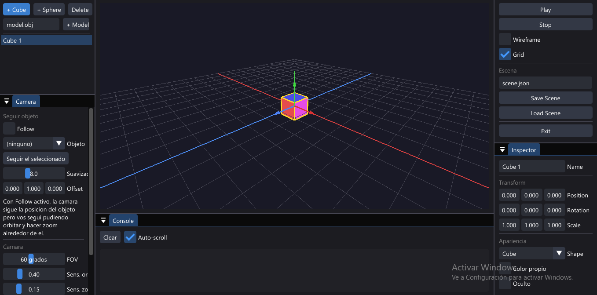
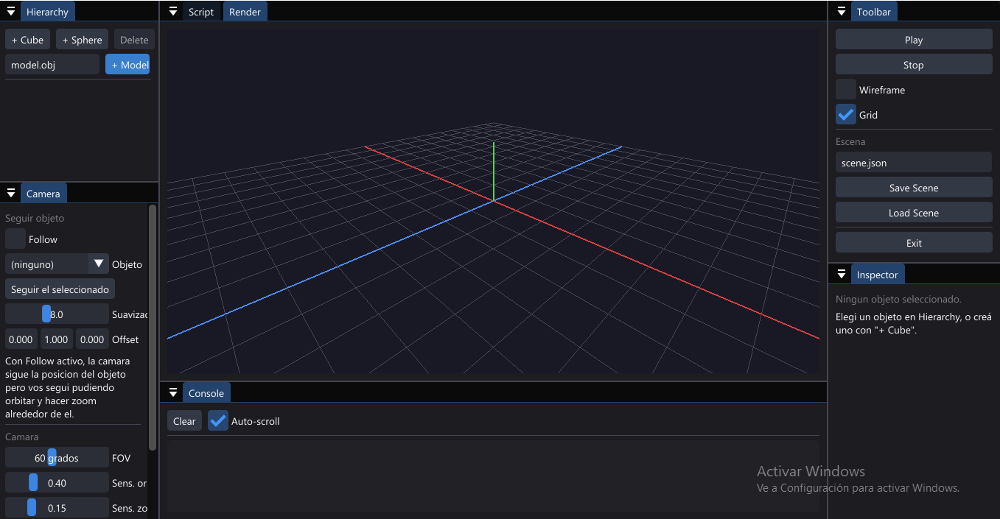
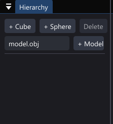
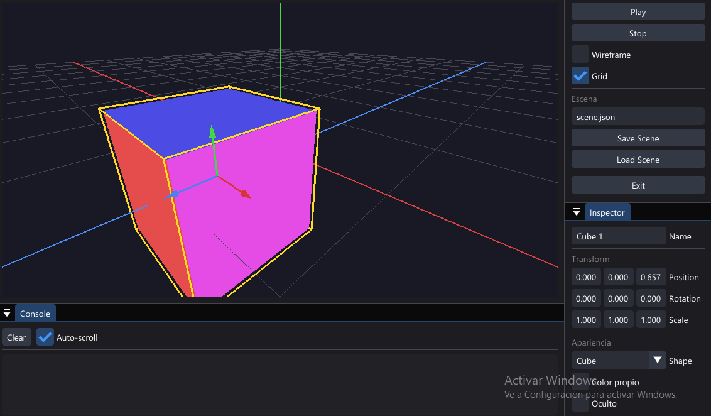
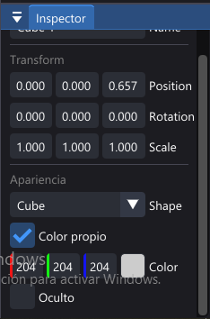
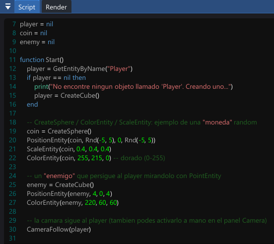

01 Introducción
DevCode3D combina un editor de escena tipo Unity/Godot muy simplificado con un motor de scripting
Lua que replica la API clásica de Blitz3D (CreateCube,
PositionEntity, MoveEntity, etc.). La idea es
poder armar una escena a mano con el mouse (Hierarchy + Inspector), y después darle vida con un
script: mover objetos, detectar colisiones simples, seguir al jugador con la cámara, leer teclado y
mouse, y todo eso sin salir de la app.
Modo edición
Creás y acomodás objetos (cubos, esferas o modelos .obj) usando
Hierarchy e Inspector. Esta disposición se puede guardar como escena.
Modo Play
Al apretar Play se ejecuta el script del panel Script. La escena de edición se respalda automáticamente y se restaura al apretar Stop.
02 Interfaz general
La ventana se organiza en paneles acoplables (dockeables), al estilo de un IDE:

| Panel | Función |
|---|---|
| Hierarchy | Lista de objetos de la escena. Crear/borrar cubos, esferas y modelos. |
| Inspector | Propiedades del objeto seleccionado: nombre, transform, forma, color. |
| Script | Editor de código Lua (pestaña junto a Render). |
| Render | Viewport 3D donde se ve y se navega la escena. |
| Console | Salida de print(), errores de Lua y eventos Play/Stop. |
| Camera | Configuración de la cámara orbital y del modo "Follow". |
| Toolbar | Play / Stop, Wireframe, Grid, guardar/cargar escena, salir. |

03 Panel Hierarchy — crear objetos

- + Cube / + Sphere: crean un objeto nuevo en el origen y lo seleccionan automáticamente.
- Delete: borra el objeto seleccionado (se habilita solo si hay uno seleccionado).
- Campo de texto + Model: escribí la ruta a un archivo
.obj(por ejemplomodel.obj) y tocá + Model para cargarlo. Los materiales.mtlse buscan en la misma carpeta. - La lista de abajo muestra todos los objetos de la escena. Los ocultos aparecen atenuados con la marca (oculto). Click para seleccionar.
04 Panel Inspector — editar propiedades


| Campo | Descripción |
|---|---|
| Name | Nombre del objeto. Se usa con GetEntityByName desde el script. |
| Position / Rotation / Scale | Transform en X, Y, Z. Rotación en grados. Arrastrá con el mouse para cambiar el valor, o hacé doble click para tipearlo. |
| Shape | Cube o Sphere. Si el objeto viene de un .obj, en vez de esto se muestra la ruta del modelo y su cantidad de triángulos, con un botón Reload. |
| Color propio | Si está desactivado, el objeto usa el color "arcoíris" de fábrica por cara. Si se activa, se puede elegir un color sólido con el selector RGB. |
| Oculto | Igual que HideEntity/ShowEntity desde script: oculta el objeto sin borrarlo. |
05 Panel Camera
La cámara es una cámara orbital (yaw / pitch / distancia alrededor de un punto "target"), con la opción de seguir automáticamente a un objeto:
| Control | Qué hace |
|---|---|
| Follow + Objeto | Si está activo, el punto target de la órbita persigue la posición del objeto elegido, con un suavizado configurable. Vos seguís pudiendo orbitar y hacer zoom alrededor de él. |
| Seguir el seleccionado | Atajo: activa Follow sobre el objeto actualmente seleccionado en Hierarchy. |
| Suavizado | Qué tan rápido la cámara "alcanza" al objeto seguido (más alto = más inmediato). |
| Offset | Desplazamiento del punto de seguimiento respecto al objeto (por ejemplo, para mirarlo un poco más arriba). |
| FOV | Campo de visión de la cámara, en grados. |
| Sens. órbita / Sens. zoom | Sensibilidad del mouse al orbitar (botón derecho) y al hacer zoom (rueda). |
| Invertir pitch (Y) | Invierte el eje vertical al orbitar. |
| Distancia min/max | Límites de zoom. |
| Reset Camera | Vuelve todos los valores de cámara a los de fábrica. |
06 Viewport (Render) y controles de mouse
| Acción | Control |
|---|---|
| Orbitar cámara | Arrastrar con Botón derecho del mouse |
| Zoom | Rueda del mouse |
| Seleccionar objeto | Click en Hierarchy, o desde el script |
| Toolbar | Función |
|---|---|
| Play | Guarda un respaldo de la escena, resetea la consola y el reloj interno, compila y ejecuta el script, y llama a Start() si existe. |
| Stop | Cierra el estado de Lua y restaura la escena tal como estaba antes de Play. |
| Wireframe | Dibuja los objetos en modo alambre. |
| Grid | Muestra/oculta el piso cuadriculado y los ejes de referencia. |
| Save Scene / Load Scene | Guarda o carga la escena (objetos + cámara) en un archivo JSON, con el nombre indicado en el campo de texto (por defecto scene.json). |
| Exit | Cierra la aplicación. |
07 Editor de Script
El panel Script es un editor de texto con resaltado de sintaxis para Lua. El código que escribas ahí es el que se ejecuta al apretar Play.

Funciones especiales
El script puede definir dos funciones globales que el motor llama automáticamente:
| Función | Cuándo se ejecuta |
|---|---|
Start() | Una sola vez, apenas se apreta Play (después de correr el resto del script). |
Update(dt) | Una vez por frame mientras el juego está corriendo. dt es el tiempo en segundos desde el frame anterior. |
Ejemplo mínimo
-- Se ejecuta una vez al arrancar function Start() player = CreateCube() ColorEntity(player, 80, 160, 255) PositionEntity(player, 0, 0.5, 0) CameraFollow(player) end -- Se ejecuta cada frame function Update(dt) local speed = 4 if KeyDown(0x57) then MoveEntityLocal(player, 0, 0, speed*dt) end -- W if KeyDown(0x53) then MoveEntityLocal(player, 0, 0, -speed*dt) end -- S if KeyDown(0x41) then TurnEntity(player, 0, -90*dt, 0) end -- A if KeyDown(0x44) then TurnEntity(player, 0, 90*dt, 0) end -- D end
KeyDown/KeyHit
son los Virtual-Key Codes de Windows (por ejemplo 0x57 = "W",
0x20 = barra espaciadora, 0x1B = Escape).
08 Referencia de la API Lua
Todas estas funciones quedan disponibles como globales dentro del script, sin necesidad
de require. Los "objetos" son referenciados por un handle numérico
(el valor que devuelven CreateCube, CreateSphere, etc.).
Creación y consulta de objetos
| Función | Descripción |
|---|---|
CreateCube() | Crea un cubo y devuelve su handle. |
CreateSphere() | Crea una esfera y devuelve su handle. |
LoadModel(ruta) | Carga un modelo .obj (reutiliza la malla si ya fue cargada) y crea un objeto con ella. |
GetEntityByName(nombre) | Devuelve el handle del primer objeto con ese nombre, o nil si no existe. |
EntityByIndex(i) | Devuelve el handle en la posición i (1..CountEntities()), útil para recorrer todos los objetos. |
CountEntities() | Cantidad total de objetos en la escena (incluye ocultos/borrados). |
EntityExists(handle) | Chequea si un handle sigue siendo válido, sin tirar error. |
EntityName(handle) | Devuelve el nombre del objeto. |
DeleteEntity(handle) | Borrado "suave": lo oculta y le cambia el nombre a (deleted) (los handles de otros objetos no se invalidan). |
Transform
| Función | Descripción |
|---|---|
PositionEntity(h, x, y, z) | Fija la posición absoluta. |
MoveEntity(h, dx, dy, dz) | Suma un desplazamiento en espacio de mundo. |
MoveEntityLocal(h, dx, dy, dz) | Mueve en el espacio local del objeto (según su rotación en Y): z = adelante/atrás, x = derecha/izquierda, y = arriba/abajo. |
RotateEntity(h, rx, ry, rz) | Fija la rotación absoluta, en grados. |
TurnEntity(h, drx, dry, drz) | Suma rotación (grados) a la actual. |
ScaleEntity(h, sx, sy, sz) | Fija la escala en cada eje. |
PointEntity(h, objetivo) | Rota h en Y para que su frente apunte hacia objetivo. Ideal para IA simple ("mirar al jugador"). |
EntityX/Y/Z(h) | Devuelven la posición en cada eje. |
EntityRotX/Y/Z(h) | Devuelven la rotación en cada eje. |
EntityScaleX/Y/Z(h) | Devuelven la escala en cada eje. |
EntityDistance(a, b) | Distancia euclídea entre dos objetos. |
EntitiesOverlap(a, b) | Colisión simple por cajas alineadas a los ejes (AABB), usando la escala como tamaño. |
Apariencia y visibilidad
| Función | Descripción |
|---|---|
ColorEntity(h, r, g, b) | Color sólido, valores 0-255 (como en Blitz3D). Pasar (-1,-1,-1) restaura el color arcoíris por defecto. |
HideEntity(h) / ShowEntity(h) | Oculta o muestra el objeto. |
EntityHidden(h) | Devuelve si está oculto. |
Cámara
| Función | Descripción |
|---|---|
CameraFollow(h) | Activa el seguimiento de cámara sobre el objeto h (equivalente a tildar "Follow" en el panel Camera). |
CameraFollowOff() | Desactiva el seguimiento. |
SetCameraTarget(x, y, z) | Fija manualmente el punto que mira/orbita la cámara. |
SetCameraAngles(yaw, pitch) | Fija los ángulos de la órbita (pitch se recorta a ±89°). |
SetCameraDistance(d) | Fija la distancia de la cámara al target (recortada a los límites min/max configurados). |
CameraTargetX/Y/Z() | Devuelven el punto target actual. |
CameraYaw() / CameraPitch() / CameraDist() | Devuelven los valores actuales de la órbita. |
Entrada (teclado / mouse)
| Función | Descripción |
|---|---|
KeyDown(vk) | True mientras la tecla está apretada. vk es un Virtual-Key Code de Windows. |
KeyHit(vk) | True solo en el frame en que la tecla pasa de arriba a abajo. |
MouseX() / MouseY() | Posición del mouse relativa al viewport (0,0 = esquina superior izquierda). Devuelve -1,-1 si el mouse está fuera del viewport. |
MouseInViewport() | True si el mouse está sobre el viewport de Render. |
MouseDown(btn) / MouseHit(btn) | Estado de los botones del mouse. btn: 1 = izquierdo, 2 = derecho, 3 = medio. |
Utilidades
| Función | Descripción |
|---|---|
GetTime() | Segundos transcurridos desde que se apretó Play. |
Rnd() / Rnd(max) / Rnd(min,max) | Número al azar de punto flotante: 0..1, 0..max, o min..max. |
Rand(min, max) | Entero al azar entre min y max, inclusive. |
Clamp(v, min, max) | Recorta v al rango [min, max]. |
print(...) | Reemplaza el print estándar de Lua: la salida va al panel Console en vez de a una terminal. |
09 Guardar y cargar escenas
Save Scene / Load Scene (en el panel Toolbar) persisten la escena
de edición completa —todos los objetos con su transform, forma, color y visibilidad, más la
configuración de la cámara— en un archivo JSON (por defecto
scene.json, en la misma carpeta del ejecutable).
- El nombre/ruta del archivo se edita en el campo de texto encima de los botones.
- Si un objeto es un modelo
.objcuyo archivo ya no se encuentra al recargar la escena, el motor lo reporta en la Console en vez de fallar silenciosamente. - Guardar/cargar escena es independiente del script: es el estado de edición, no lo que pasa
durante Play (que siempre arranca de nuevo desde
Start()).
CreateCube,
posiciones movidas por Update, etc.) no se guardan solos:
se descartan al apretar Stop, que restaura la escena tal como estaba antes de Play.
10 Descargas
Versión de escritorio para Windows, compilada en modo Debug.
DevCode3D.exe
Windows 64-bit · Build Debug · ~6,4 MB
- Sistema operativo Windows (64-bit)
- Tarjeta gráfica con soporte OpenGL
- Sin instalación: ejecutable portable
- Colocá
.obj/.mtljunto al .exe para cargarlos por ruta relativa
scene.json y los
modelos .obj referenciados por ruta relativa (ver sección
Escenas). Si lo movés, llevá también esos archivos.
11 Créditos
ZyronSoftware
DevCode3D — proyecto desarrollado en 2026.